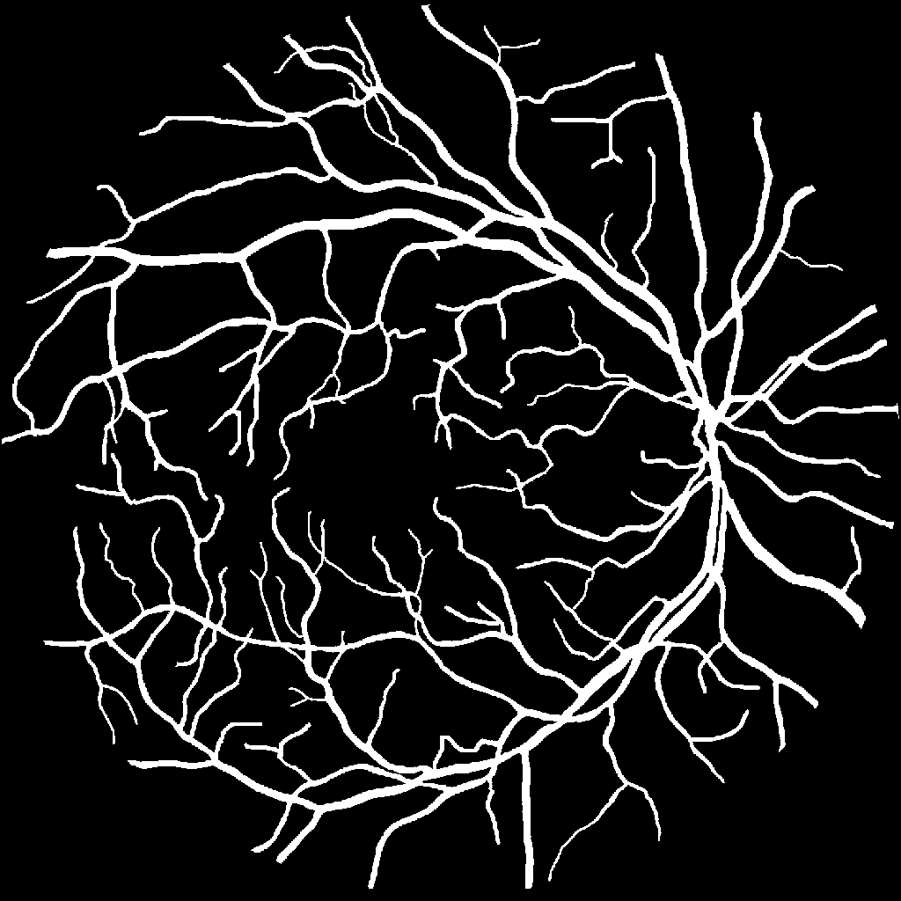
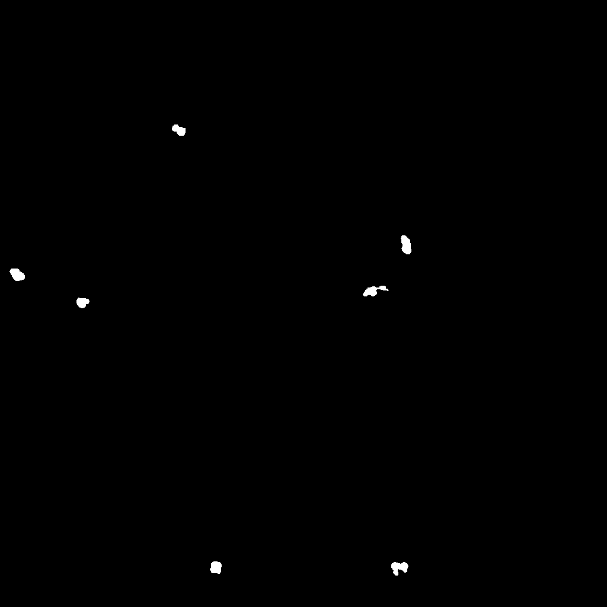
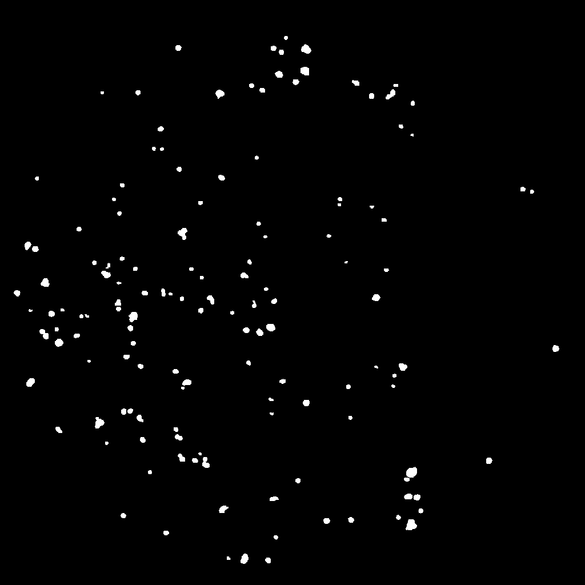

Visualisation Example
[1]:
import maples_dr
from rich import print
Thanks for using MAPLES-DR! When using this dataset in academic works, please cite: https://doi.org/10.1038/s41597-024-03739-6
Configure Maples-DR
Configure the images resolution and format.
[2]:
maples_dr.configure(
resize=1024,
image_format="PIL",
)
Load dataset
Load the train set in memory.
[3]:
dataset = maples_dr.load_train_set()
Read the first sample
[4]:
sample = dataset[0]
print(f"Sample name: [i bold]{ sample.name }")
print(f"Diabetic Retinopathy grade: [i bold]{ sample['dr'] }")
print(f"Macular Edema grade: [i bold]{ sample['me'] }")
Sample name: 20060411_61478_0200_PP
Diabetic Retinopathy grade: R2
Macular Edema grade: M2
Visualise Anatomic biomarkers
Vessels
[5]:
sample["vessels"]
[5]:

Optic Disk
[6]:
sample["optic_disc"]
[6]:
Macula
[7]:
sample["macula"]
[7]:
Visualise Pathological biomarkers
Hemorrhages
[8]:
sample["hemorrhages"]
[8]:

Microaneurysms
[9]:
sample["microaneurysms"]
[9]:

Exudates
[10]:
sample["exudates"]
[10]:
Cotton Wool Spots
[11]:
sample["cotton_wool_spots"]
[11]: